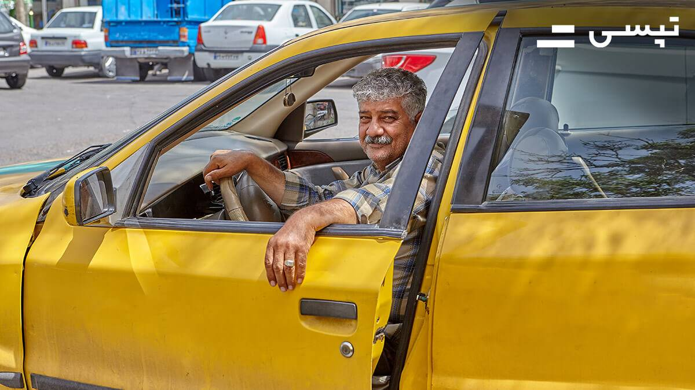
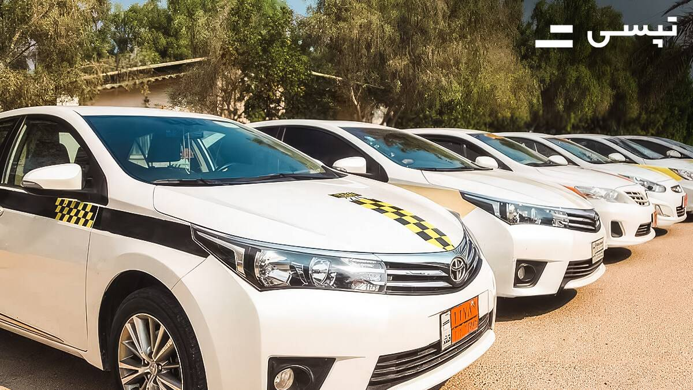

پنل سازمانی تپسی، یک سامانه تحت وب است که به سادگی امکان درخواست همزمان تعداد نامحدودی خودرو و پیک را برای کسبوکارها و سازمانها فراهم میکند. و با استفاده از آن میتوانید ماموریت های درونشهری و ارسال کالاهای خود را به سادگی مدیریت کنید.
اطلاعات بیشتر سرویس سازمانی ورود و ثبت نام پنل سازمانی

کد اعتبار تپسی امکان استفاده از تخفیف یک تا ده درصدی سفر با تپسی را برای کاربران، کسب و کارها و سازمانها فراهم میکند. تنها با صرف چند دقیقه میتوانید این کد را تهیه کنید تا هزینه سفرهایتان با تپسی را کاهش دهید یا آن را در اختیار کارکنان و مشتریانتان بگذارید.
خرید کد اعتبار و تخفیفامکانات ویژه امنیت سفر، شامل اشتراک سفر و پشتیبانی ۲۴ ساعته تیم متخصصین امنیت تپسی
امکان درخواست خودرو بدون نیاز به اینترنت و اپلیکیشن، از طریق تماس با شماره ۱۶۳۰
امکان استفاده کاربران نابینا و ناشنوا از اپلیکیشن تپسی و عدم کسر کمیسیون از سفر مسافران ویلچردار
سهولت استفاده از اپلیکیشن با پیشنهاد مبدا و مقصد سفر، مقاصد منتخب و پیشنهادهای ویژه شما
رانندگان (سفیران) بهعنوان همکاران تپسی، جایگاه ویژهای برای شرکت دارند. به همیندلیل مزایای مختلفی برای آنها در نظر گرفته شده است.

با این که سفر با ماشین شخصی راحتتر است اما گاهی اوقات شرایط خاص است و برای سفر بهتر است که از تاکسی استفاده کرد. البته گزینه سفر با تاکسی...
رانندگی پس از مدتی تبدیل به یک شغل فرسایشی میشود؛ مخصوصا ...
لذت سفر به کیش را رفت و آمد آسان در آن بیشتر میکند. برای همین رانندگان تاکسیهای کیش ...
تهران
Tehran
کرج
Karaj
مشهد
Mashhad
اصفهان
Isfahan
شیراز
Shiraz
ارومیه
Urmia
لاهیجان
Lahijan
رشت
Rasht
انزلی
Anzali
تبریز
Tabriz
ساری
Sari
یزد
Yazd
کرمان
Kerman
قم
Qom
اهواز
Ahvaz
بابل
Babol
قائم شهر
Qaem Shahr
آمل
Amol
کرمانشاه
Kermanshah
گرگان
Gorgan
قزوین
Qazvin
اراک
Arak
نیشابور
Neyshabur
نور
Nur
محمودآباد
Mahmudabad
بجنورد
Bojnord
اردبیل
Ardabil
همدان
Hamadan
خرم آباد
Khorramabad
کیش
Kish